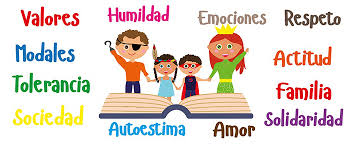

El conductismo es un conjunto de aproximaciones al análisis del comportamiento de los humanos y el resto de animales que se focaliza en la conducta observable. Ésta se entiende como el resultado de la interacción entre el organismo, incluyendo su historia individual, y los estímulos relevantes en una situación determinada.
Por eso, la organización de un ser humano está asociada a un mecanismo; sus detalles cumplen su propia función, y el fracaso de uno de los detalles conduce a un fracaso general si no se asumen las medidas correspondientes. Hoy en día, los psicólogos “coinciden con Descartes en que gran parte del comportamiento puede entenderse como reacciones a acontecimientos externos: el entorno plantea una pregunta y el organismo la responde” (Gleitman 17).
En un sentido muy estricto, podemos considerar que todo lo que hacemos es conducta: si nos levantamos de la silla, si cogemos un objeto, si caminamos, si hablamos…. Es más, incluso estando quietos tenemos conductas mentales, como pueden ser pensar, imaginar o soñar. No es posible la ausencia de conducta.
Video Informativo
¿Qué son los valores morales?
los valores morales son criterios que permiten a las personas discernir entre lo que está bien y lo que está mal, y cómo deben actuar en diferentes situaciones. Son la base para la toma de decisiones éticas y para la construcción de una sociedad justa y equitativa.
Los valores son ideales que están condicionados según las creencias y costumbres de cada sociedad, y la moral es la rama de la filosofía que estudia las costumbres y normas de una sociedad. Es decir, los valores remiten a un sistema social determinado que les da sentido, y, además, existen valores universales, como: la sinceridad, la bondad, la paz, la solidaridad y la humildad.
Es el sentimiento de respeto y fidelidad, incluso cuando las circunstancias son adversas, hacia una persona, una organización, un compromiso, una nación u otra clase de ente.

1. Amistad – La amistad es una forms de afecto de una persona a otra.
2. Tolerancia – Es el respeto o consideracion hacia las opiniones gustos, creencias, etc. de los demas, aunque sean diferentes a las nuestras.
3. Solidaridad– Se manifiesta cuando dos o mas personas se unen y colaboran mutuamente para conseguir el bien para unas personas, pensando den el bien común.
4. Honestidad – Se manifiesta cuando la persona se comporta de una manera transparentecon los demás; no oculta nada.
5. Perseverancia – Significa mantenerse constante en la persecucion de lo comenzado.
6. Prudencia – Consiste en discernir lo que es bueno o malo, actuando con moderación y cautela.
7. Generosidad – La persona generosa tiene la capacidad de ofrecer a otros lo más preciado de sí mismo.
8. Lealtad – Las persona leales tienen un alto sentido del compromiso y cumplen con su palabra.
9. Humildad – Es la creencia que tenemos acerca de lo que somos, de nuestras fortalezas y debilidades como seres humanos
10. Dignidad – Más que un valor es una condición, hacia uno mismo y hacia los demás.
11. Libertad – L a verdadera libetad consiste en el dominio de si mismo.
12. Justicia – Implica dar a quien lo que le corresponde.
13. Fortaleza – Es la capacidad que nos permite mantenernos fieles a nuestras conviccionesy hacerles frente, con firmeza y energia, a las difeerntes situaciones con que nos encontramos en la vida diaria.
14. Gratitud – Es cuando uan persona se siente en deuda con otra persona, por haber recibido algún bien.
15. Paz - ES el fruto de la sana convivencia entre las personas.
16.Responsabilidad – Es la capacidad de cumplir con mis deberes y compromisos.
17. Servicio – Es la capacidad de reconocer las las necesidades propías y las necesidades de los demás.
18. Igualdad – Todos somos iguales dignidad y derechos, sin importa el color, religión, posición económica, raza, sexo o ideología.
19. La vida – El derecho a la vida conlleva al respeto de la dignidad humana.
20. Respeto – Es la base fundamental de la convivencia sana y pacífica entre los miembros de una sociedad.